Static reconstruction with conditional aviation evidence. The source topology and printed constraints guide this development, but the web profiles, oil groove sizes, ball count, thrust dimensions and axial engine registration are estimated. Source/model cameras are not registered. Review cuts and hidden upper case do not alter the native assembly. Shaft plugs, driving gear, additional locking hardware, cylinders, rods and engine services remain pending.
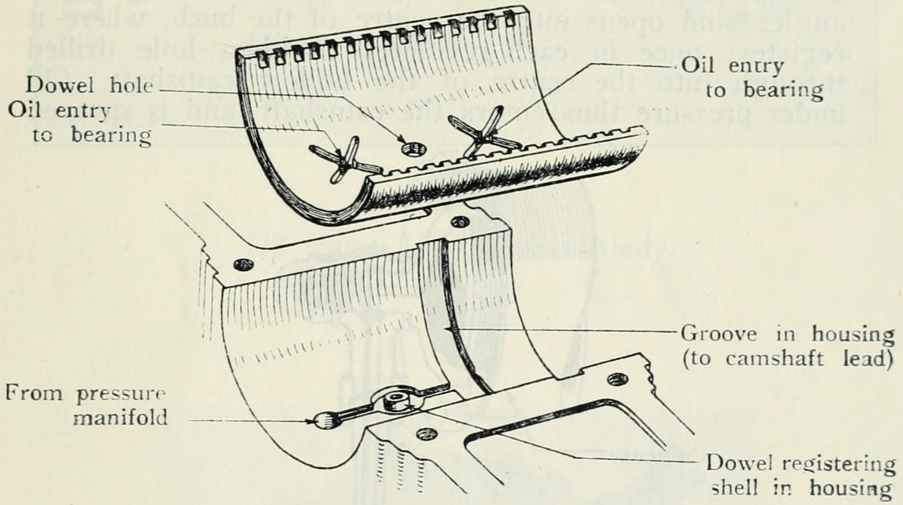
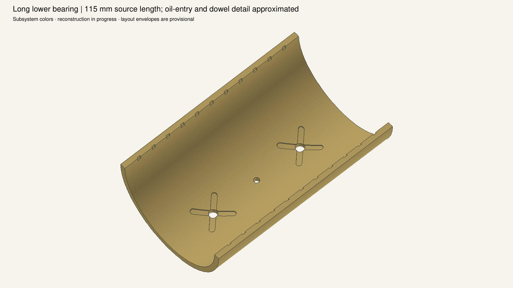
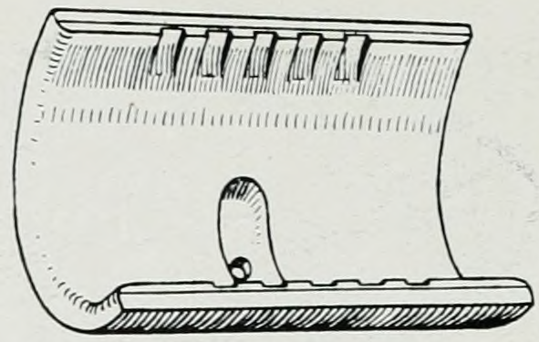
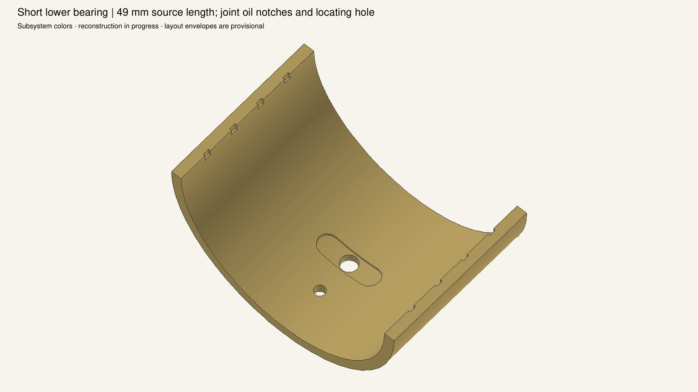
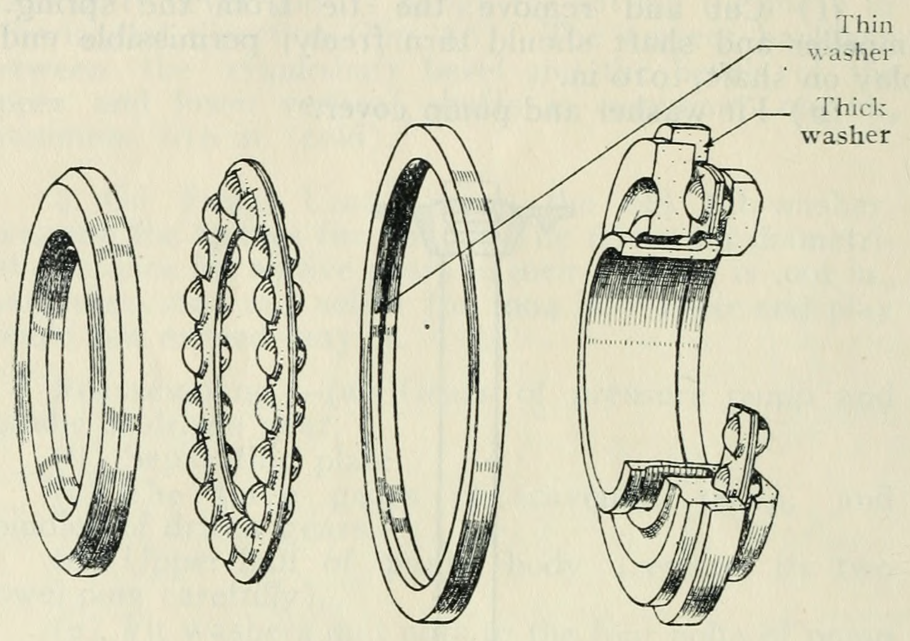
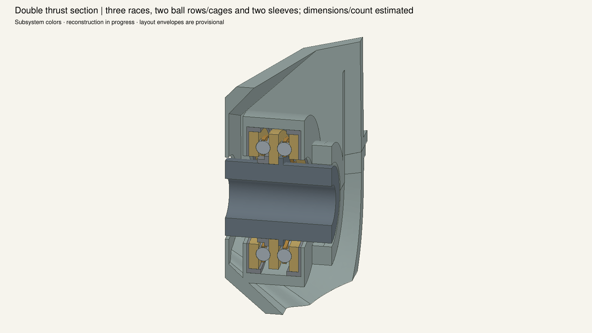
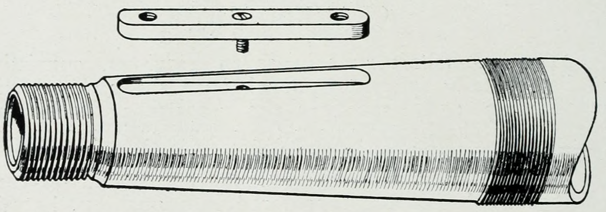
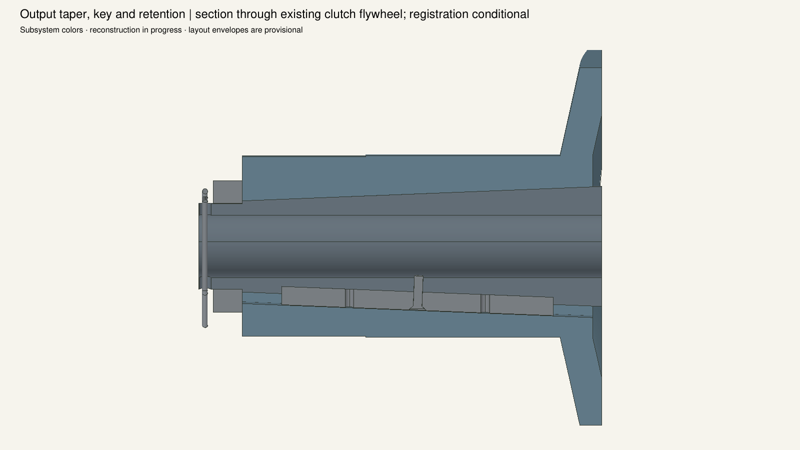
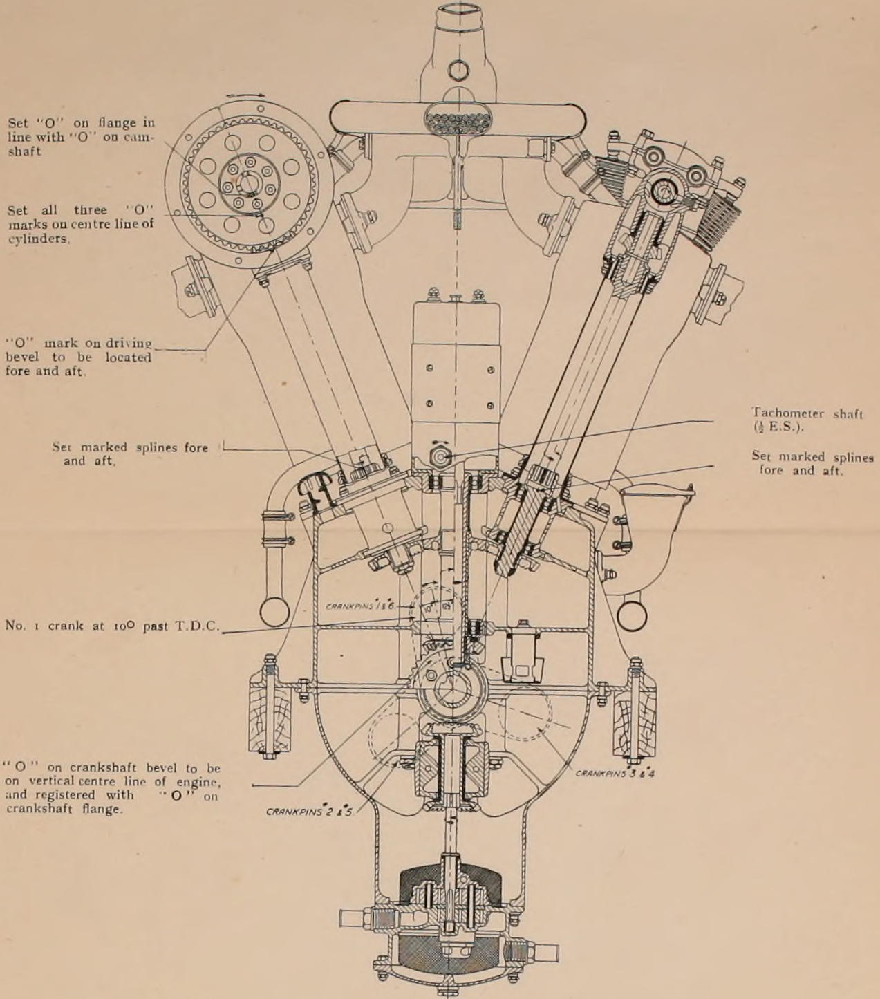
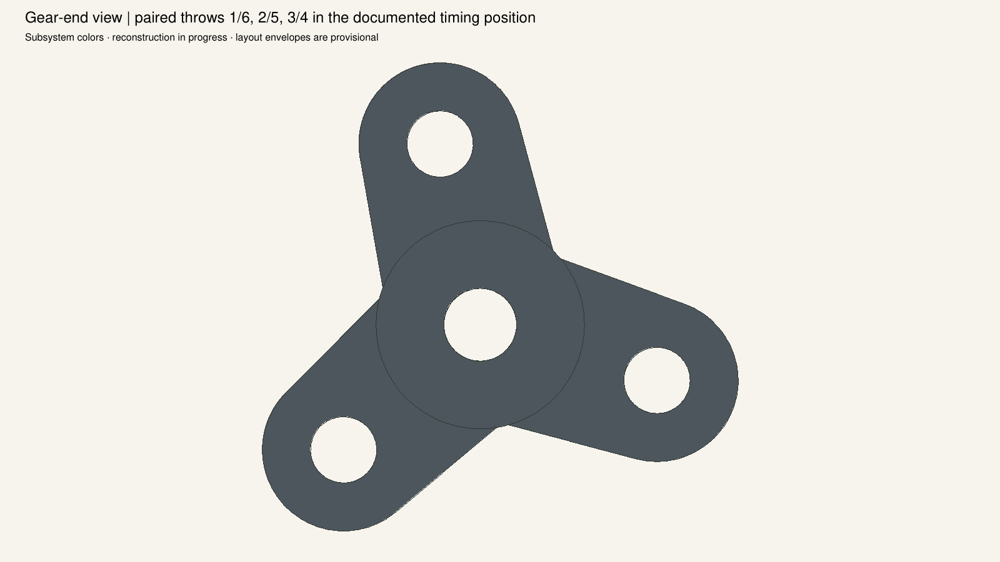
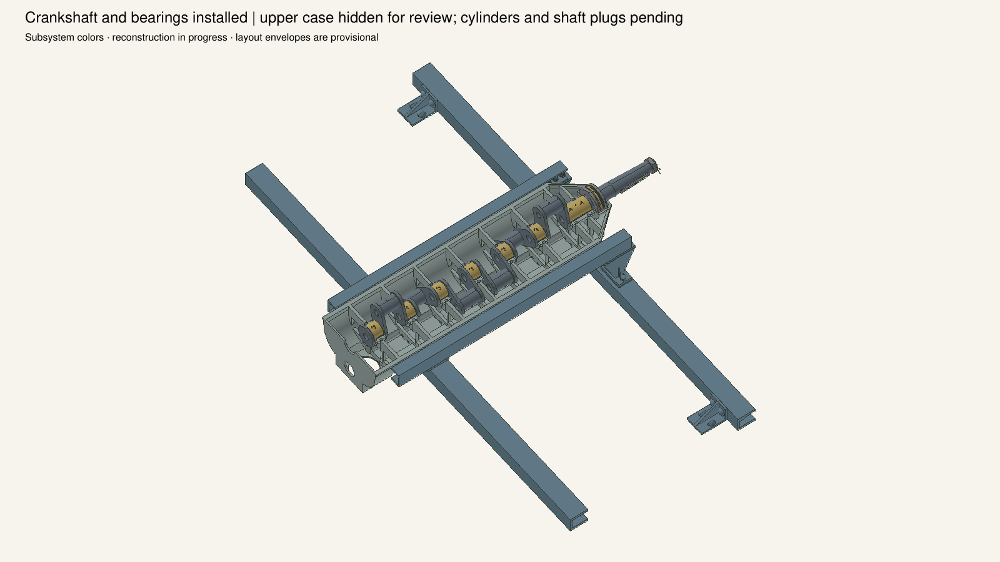
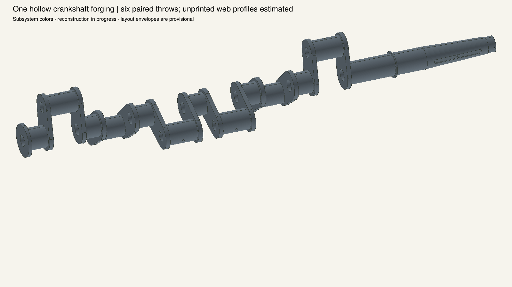
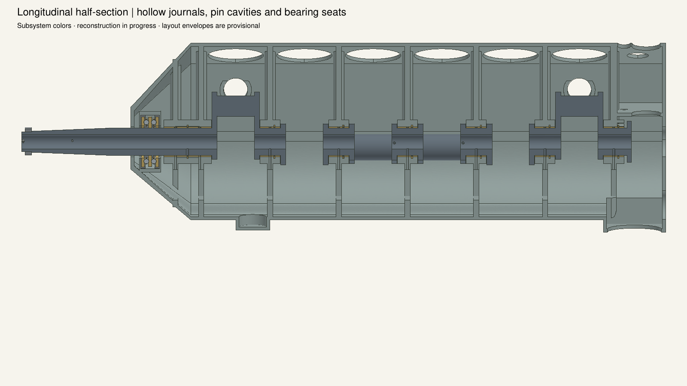